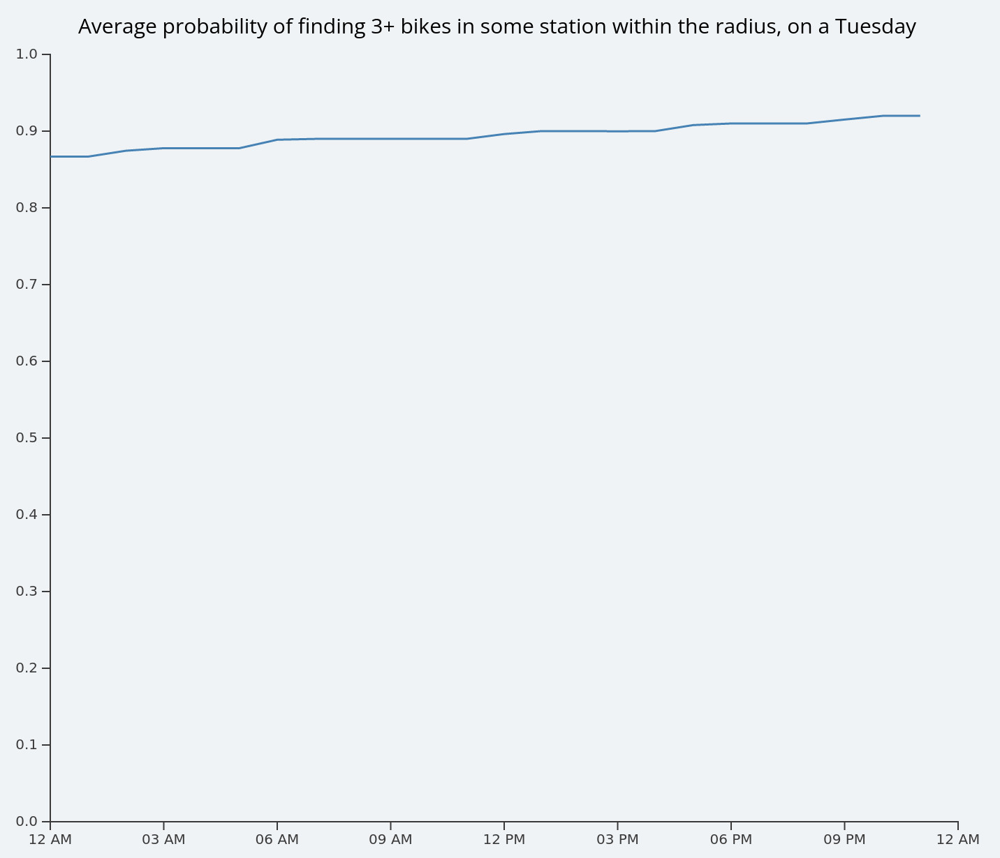

How to use the visualization
First of all, set the parameters for the day of week, hour of that day and availability threshold. Then, watch the visualization get updated with the results.
Try zooming in and out using the mouse wheel, and moving the map using the mouse (click and drag). Whenever your mouse is over a group of stations, the availability trends about that group will be displayed in the right side of the screen. In this case, the line chart shows the availability of the stations with the configured threshold, on the day of week that was selected, but the trend line is shown for the whole day.
How are the probabilities calculated
The availability probabilities are calculated using the following steps:
- Find all the stations that lie within the cursor's radius of influence, or any hexagon for that matter.
- For each station inside the area, find the bike availability for the selected day of week and every hour of day.
- If the availability for any station within the area is greater than the threshold, then the whole area will be considered as available in that time slot (hour). If the availability for all stations within the area is less than the threshold, then the whole area will be considered as unavailable in that time slot.
- Gather the aggregated data for all time slots in the selected day from the previous step and report only the probability of the hour selected in the parameters at the top of the screen. This probability of availability gets drawn as a text label inside the circle, but is not shown in the hexagons to prevent cluttering. As an example, in the following picture, only two stations are considered for a Tuesday between 08 PM and 09 PM. The threshold is set to 3, and the resulting probabilitiy is 91%. This can be interpreted as the chances of finding 3 or more bikes available at any of the two stations, on a normal Tuesday, between 08 PM and 09 PM.
- The probability of availability inside the active region (circle) is plotted in the line chart, and the trend line for each hour of the day is shown at the right side of the screen. 

If no stations are found within the area, then the line chart will display the probability of availability for the whole city, averaged between all the stations for each hour of the day.